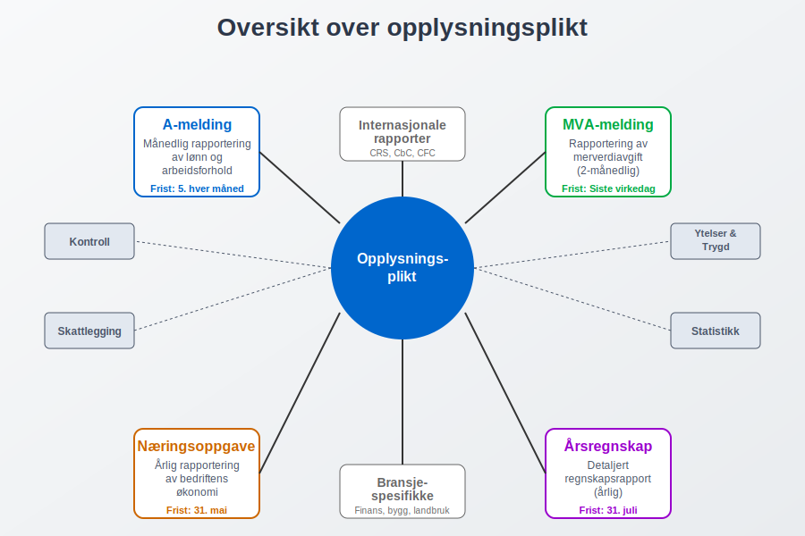
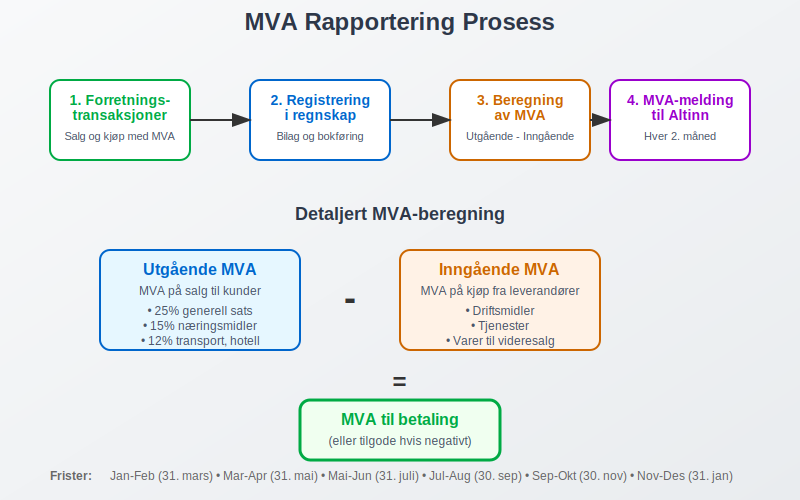
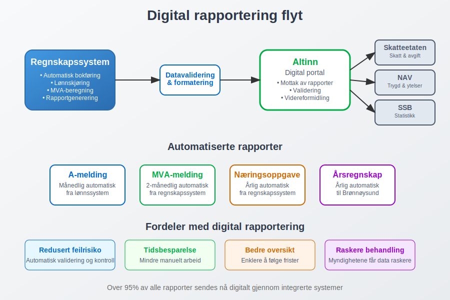
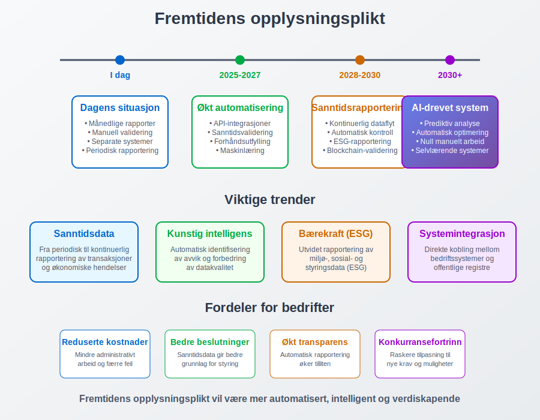

Opplysningsplikt er det lovpålagte ansvaret bedrifter og organisasjoner har for å rapportere økonomisk og administrativ informasjon til offentlige myndigheter. Dette omfatter en rekke rapporteringsordninger som sikrer at staten har nødvendig informasjon for skattlegging, statistikk, kontroll og utbetaling av offentlige ytelser. Den mest kjente formen for opplysningsplikt er a-meldingen, men det finnes mange andre rapporteringskrav som bedrifter må forholde seg til.
Opplysningsplikten er hjemlet i flere lover og forskrifter, og er en grunnleggende del av det norske skatte- og avgiftssystemet. Den sikrer at myndighetene har tilgang til korrekt og oppdatert informasjon som er nødvendig for å administrere offentlige ordninger effektivt.

Hovedformål med opplysningsplikt
Opplysningsplikten tjener flere viktige formål i det norske samfunnet:
- Skattlegging: Sikrer at alle betaler riktig skatt basert på faktiske inntekter og økonomiske forhold
- Statistikk: Gir grunnlag for offisiell statistikk om økonomi, sysselsetting og samfunnsutvikling
- Kontroll: Muliggjør kontroll av at bedrifter følger gjeldende lover og regler
- Ytelsesutbetaling: Sikrer korrekt beregning og utbetaling av offentlige ytelser som sykepenger og dagpenger
- Samfunnsplanlegging: Gir myndighetene data for å planlegge og utvikle offentlige tjenester
Hovedtyper av opplysningsplikt
A-ordningen og a-melding
A-ordningen er den mest omfattende rapporteringsordningen for arbeidsgivere. Gjennom a-meldingen rapporterer arbeidsgivere månedlig om:
- Arbeidsforhold og ansettelsesdetaljer
- Lønn og andre inntekter
- Forskuddstrekk og arbeidsgiveravgift
- Feriepenger og andre ytelser
Skattemeldingen og næringsoppgaven
For bedrifter er næringsoppgaven en sentral del av opplysningsplikten. Den inneholder detaljert informasjon om:
- Driftsinntekter og -kostnader
- Balanse og egenkapital
- Avskrivninger og investeringer
- Særskilte fradrag og tillegg
MVA-meldingen
MVA-meldingen er en annen viktig del av opplysningsplikten for MVA-registrerte virksomheter:
- Utgående MVA på salg
- Inngående MVA på kjøp
- Spesielle MVA-regler og unntak
- Omvendt avgiftsplikt

Rapporteringsfrister og sanksjoner
Opplysningsplikten er knyttet til strenge frister som varierer avhengig av rapporteringstype:
| Rapporteringstype | Frist | Frekvens |
|---|---|---|
| A-melding | 5. i måneden etter | Månedlig |
| MVA-melding | Siste virkedag i måneden etter | Hver 2. måned |
| Næringsoppgave | 31. mai | Årlig |
| Årsregnskap | 31. juli | Årlig |
Konsekvenser ved brudd på opplysningsplikten
Brudd på opplysningsplikten kan få alvorlige konsekvenser:
- Tvangsmulkt: Daglige mulkter for forsinket levering
- Tilleggsskatt: Ved feilaktige eller manglende opplysninger
- Anmeldelse: I alvorlige tilfeller kan det føre til straffeforfølgelse
- Tap av fradragsrett: For eksempel ved manglende bilag
Digitalisering og automatisering
Den norske opplysningsplikten har gjennomgått en omfattende digitalisering de siste årene. Altinn er den sentrale plattformen for digital rapportering, og de fleste moderne regnskapssystemer har integrert funksjonalitet for automatisk rapportering.
Fordeler med digital rapportering
- Redusert feilrisiko: Automatisk validering og kontroll
- Tidsbesparelse: Mindre manuelt arbeid
- Bedre oversikt: Enklere å holde oversikt over frister og krav
- Raskere behandling: Myndighetene kan behandle rapportene mer effektivt

Spesielle opplysningspliktregler
Internasjonale forhold
Bedrifter med internasjonale aktiviteter har utvidede opplysningspliktregler:
- CRS-rapportering: For finansinstitusjoner
- Country-by-Country rapportering: For store multinasjonale konsern
- Kontrollert utenlandsk selskap (CFC): Særskilte regler for utenlandske datterselskap
Særskilte bransjer
Enkelte bransjer har spesielle opplysningspliktregler:
- Finanssektoren: Utvidede rapporteringskrav til Finanstilsynet
- Byggebransjen: Særskilte krav til HMS-rapportering
- Landbruk: Spesielle regler for jordbruksfradrag
Praktiske råd for å oppfylle opplysningsplikten
Etabler gode rutiner
- Månedlige kontroller: Gjennomgå alle rapporteringskrav hver måned
- Dokumentasjon: Sørg for god dokumentasjon av alle transaksjoner
- Backup-systemer: Ha reserveløsninger hvis hovedsystemet svikter
- Kompetanse: Sørg for at ansvarlige har nødvendig kunnskap
Bruk av profesjonelle tjenester
Mange bedrifter velger å bruke regnskapsførere eller revisorer for å sikre korrekt oppfyllelse av opplysningsplikten. Dette kan være særlig viktig for:
- Komplekse virksomheter med mange ansatte
- Bedrifter med internasjonale aktiviteter
- Virksomheter i regulerte bransjer
Fremtidige utviklinger
Opplysningsplikten er i kontinuerlig utvikling, med flere viktige trender:
- Økt automatisering: Mer direkte integrasjon mellom bedriftssystemer og offentlige registre
- Sanntidsrapportering: Bevegelse mot kontinuerlig rapportering i stedet for periodiske rapporter
- Utvidet datainnsamling: Nye krav til rapportering av bærekraftsinformasjon og ESG-data
- Kunstig intelligens: Bruk av AI for å identifisere avvik og forbedre datakvalitet

Konklusjon
Opplysningsplikten er en fundamental del av det norske skatte- og avgiftssystemet som sikrer at myndighetene har nødvendig informasjon for å administrere offentlige ordninger effektivt. For bedrifter er det avgjørende å ha gode systemer og rutiner for å oppfylle disse kravene korrekt og i tide.
Ved å forstå de ulike typene opplysningsplikt og etablere robuste rapporteringsprosesser, kan bedrifter unngå sanksjoner og bidra til et velfungerende samfunnssystem. Den pågående digitaliseringen gjør det enklere enn noen gang å oppfylle disse kravene, men krever samtidig at bedrifter holder seg oppdatert på nye krav og muligheter.
Les også: Hva er Bokføringsplikt i Norge?
Relaterte ord
- A-melding
- A-ordningen
- Altinn
- Arbeidsgiveravgift
- Bokføringsplikt
- Forskuddstrekk
- MVA-melding
- Næringsoppgave
- Rapporteringsplikt
- Skattemelding